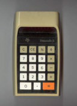

Contact:

A website about newer Texas Instruments scientific calculators
Quickly: how to read date codes
A 2003 TI-36X II (H-0403D), the two-line successor of the AOS TI-36X Solar, replaced by the very advanced MultiView TI-36X Pro in 2011. Notable features include number bases, logic, advanced statistics, integrals, many unit conversions, and a library of constants.
A 2021 TI-30Xa (L-0521O), a standard Xpanded AOS calculator, with the unique 2013 housing. It is the last AOS calculator still in production as of June 2022, and has been in production since it replaced the constant-less TI-30X in 1995. Functionally the TI-30X IIS is its successor, but the TI-30Xa is very small and light and has large easily-readable digits. Plus the keys feel really nice to press.
A 1996 TI-68, the notorious Advanced Scientific. Introduced in 1989, it was the first EOS calculator, with both the entry and result displayed on the same single line. It doesn't have menus like we see in today's EOS calculators, but the dense keyboard with a whopping 5 modifier keys sports every function availible at the time, including formula-based programmability and a powerful equation solver. Unfortunately the TI-68 was discontinued in 1999, but some claim the TI-36X Pro is its modern equivalent.
A 2005 TI-36X SOLAR, the most advanced AOS calculator since its battery counterpart the TI-35X replaced the TI-35 PLUS in 1991. Its "3.5" function keyboard allows for 2-variable statistics, number bases, logic, unit conversions, and a library of constants. Interestingly, while the hexadecimal digits A through F appear to be 3rd functions of the trig and exponential keys, they cannot be accessed unless in hexadecimal mode, where since their keys' normal functions cannot be used, they become the normal functions of those six keys. Holding the fraction, 1, 2, and 3 keys and pressing on on a solar Xpanded scientific displays an interesting self-test pattern. This specific design is a bit strange, it was the first to have a clip cover (unfortunately mine is missing it), which is now used on the TI-30XS MultiView and TI-36X Pro. Also, the ON/AC button is not above the rest of the keys, so the whole right column is shifted down, meaning rows of functions like DEC - HEX - OCT - BIN are misaligned. The TI-36X Solar got this new design in 2004, while the TI-30Xa kept its 1996 design and only got a change in font, until it got its own unique housing in 2013. Unfortunately, this wonderful AOS calculator was discontinued, likely around the release of the TI-36X Pro.
A 2002 Explorer Plus (TI-32), a non-Xpanded AOS fraction-focused elementary scientific calculator with a 10-digit display with fraction slashes. Interestingly, it displays the number of parentheses open, and entries start from the left. The first design was introduced in 1995, and it was functionally replaced by the TI-34 II in 1999, but production continued for quite some time. It includes many, but not all, standard scientific functions, and also sports two custom operations, integer division, and probability functions including a random number generator.
A 2007 TI-15 (Explorer), a two-line almost-MathPrint fraction-focused elementary scientific calculator. The functionality of the display seems to be a mix of the TI-68, TI-34 II, and TI-34 MultiView, with strangely split characters. It's taller than most, has a unique housing, and lacks many standard scientific functions. It has several different "problem solving" modes.
Contact:
Have something to add? Shoot me an email at trainrideryt@gmail.com